England > Midlands
PEVERIL CASTLE
Peveril Castle was built to serve as the administrative centre for valuable lead mining operations in the region. Originally raised by William Peveril, the castle was seized by Henry II who used it as a means to limit the power of the Earl of Derby. The castle passed into the hands of the Duke of Lancaster in 1372 and thereafter fell into ruin.
History
Gallery
Getting There
The Hope valley provides an east/west route through the otherwise impenetrable Peak District and was also a location rich in mineral resources. For these reasons fortifications have existed in the area since the Bronze Age. The first was Mam Tor hillfort , built in the north of the valley. This was followed in the first century AD by Hope Roman fort which was specifically constructed to supervise lead mining operations. By the early tenth century the Saxons had founded a Royal manor at Hope which was seized by the Normans following the invasion. Around 1070 William Peveril, a Norman Knight who had fought in the early campaigns of William I, was granted custody of Royal lands in the Hope Valley and was allowed to displace existing Saxon landowners in the area to forge his own estates. He built an earth and timber fortification at Hope to serve as his new administrative centre but soon after he commenced construction of a new stone castle.
The castle was built upon a rock spur protected on the east, south and west sides by sheer drops into Cave Dale and the Cavern Gorge. The structure itself took the form of a triangular enclosure with its walls constructed in stone from the start. The main access into the castle was via the east gate. A west gate provided access to a bridge over the gorge leading to an outer enclosure presumably used for stables and ancillary functions. Concurrently with the castle the adjacent settlement, Castleton, grew up to serve the site. Normally such towns were planned and built in a grid layout but that didn't happen at Castleton suggesting it evolved over a period of time. The town was surrounded by an earth rampart and ditch.
William Peveril was granted outright ownership of the Royal lands he held by Henry I enabling him to develop Castleton into the economic centre of a vast and valuable Lordship. When he died in 1114 he left his son, also called William, a vast inheritance but thereafter the familyâs fortunes waned. William supported Stephen during the Anarchy, the civil war over the English succession, but was captured alongside the King at the Battle of Lincoln (1141) . When the war was eventually settled with the accession of Henry II, the new King took control of Peveril. The King visited the castle on numerous occasions including hosting Malcolm IV of Scotland there in 1157.
After years of civil war, Henry II sought to restore the power of the monarchy. He built new castles and substantially upgraded others in order to restrict the power of his senior magnates. Peveril Castle provided a useful base for overseeing the powerful Robert Ferrers, Earl of Derby. However he had married Margaret Peveril, William's daughter, and hoped to claim the castle for himself. An opportunity arose in 1173 during the rebellion of Henry II's eldest son, Henry 'the Young the King'. Robert's son, William Ferrers, joined the rebellion but Henry II emerged triumphant and William was heavily fined and briefly imprisoned. The King then strengthened the defences at Peveril by building the Keep circa-1176.
The reign of King John (1199-1216) was beset with internal strife and civil war which provided the opportunity for the Ferrers family to make good their long denied inheritance. William Ferrers, fourth Earl of Derby was able to purchase the Peak Lordship in 1199 although the key castles of Bolsover and Peveril were not included. However in 1216 the King, who was now in open conflict with many of his Barons, granted both castles to the Earl. Despite the King's order the custodian, Brian de Lisle, refused to hand them over and William was required to besiege Bolsover and negotiate the surrender of Peveril. It was 1217 before he had possession of both sites. Ownership was short-lived and he was required to relinquish Peveril to the Crown in 1223.
The castle remained in Royal ownership for the next 150 years with numerous upgrades being made to the buildings within. However, whilst the site remained important for its administrative role overseeing the area's mining operations, its function as a Royal residence was eliminated when the vast Earldom of Chester passed into Crown control in 1237.
Peveril Castle passed to John of Gaunt, Duke of Lancaster in 1372. He had other substantial residences across the region - including Leicester, Kenilworth , Pontefract and Tutbury - and therefore Peveril was neglected. Lead and other building materials were stripped from the castle whilst the administrative functions were slowly relocated to Tutbury Castle . A survey of 1561 put the condition of the castle as beyond repair. The Duchy of Lancaster placed the castle in the care of the Ministry of Works in 1932.
Bibliography
Allen, R (1976). English Castles . Batsford, London.
Armitage, E.S (1904). Early Norman Castles of the British Isles . English Historical Review Vol 14 (Reprinted by Amazon).
Creighton, O.H (2002). Castles and Landscapes: Power, Community and Fortification in Medieval England . Equinox, Bristol.
Douglas, D.C and Greeaway, G.W (ed) (1981). English Historical Documents Vol 2 (1042-1189) . Routledge, London.
Douglas, D.C and Rothwell, H (ed) (1975). English Historical Documents Vol 3 (1189-1327) . Routledge, London.
Eales, R (2006). Peveril Castle . English Heritage, London.
Green, J (1997). The Aristocracy of Norman England . Cambridge University Press, Cambridge.
Johnson, P (2006). Castles from the Air: An Aerial Portrait of Britainâs Finest Castles . Bloomsbury, London.
King, C.D.J (1983). Castellarium anglicanum: an index and bibliography of the castles in England, Wales and the Islands . Kraus International Publications.
Liddiard, R (2003). Anglo-Norman Castles . Woodbridge.
Saltar, M (2002). Castles of the East Midlands . Folly Publications, Malvern.
Warren, W.L (1973). Henry II . London.
What's There?
Visit Official Website
Peveril Castle is dramatically sited overlooking Castleton in the Peak District. Remains of the town ditch and rampart can also be seen.
Peveril Castle Layout . The castle occupied a spur of high ground overlooking the Cave Dale and Peak Cavern Gorge. The Inner Bailey was triangular shaped with the Keep in the south-west corner. An outer bailey was accessed via a bridge over Peak Cavern Gorge. The town of Castleton developed to the north of the castle and was protected by an earth and timber rampart fronted by a ditch.
Peveril Castle . The castle is dramatically sited overlooking Castleton.
The Keep . The Keep was added by Henry II around 1176 as a result of the earlier rebellion of his son, Henry the Young King. Once faced with smooth covered ashlar, much of that stonework was stripped away from the late fourteenth century onwards for use elsewhere.
Inner Bailey . The castle's Inner Bailey was triangular shaped. The Great Hall, built in the mid-thirteenth century, occupied the far left corner and replaced an earlier hall adjacent to the Keep.
East Gate . Henry II built the East Gate in the late twelfth century.
Castleton Town Wall . Short sections of Castleton's Town Wall, which was an earth and timber structure, survive.
Peveril Castle is found in Castleton which is well sign-posted from all directions. There a large pay-and-display car park followed by a steep walk up to the castle.
Car Park
S33 8WH
53.343629N 1.777505W
No Postcode
53.340199N 1.777213W
(c) Copyright 2019 CastlesFortsBattles.co.uk
Recovered original photographs, plans and images
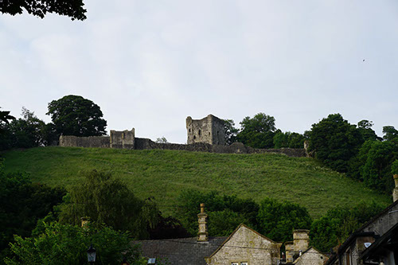
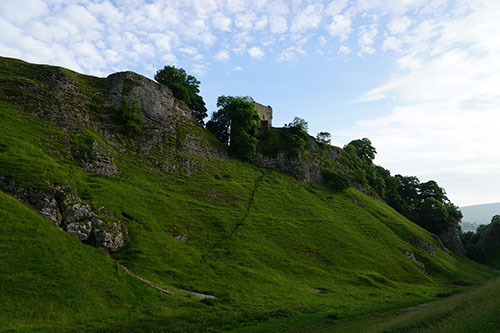

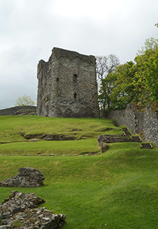
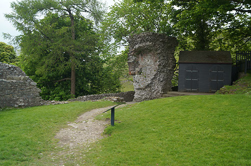
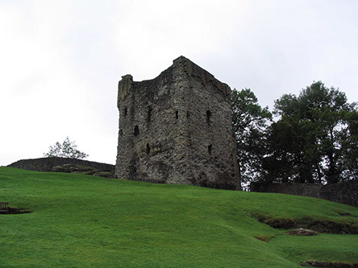
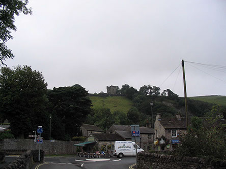
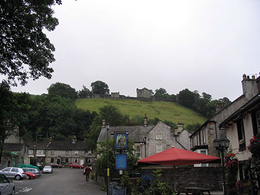
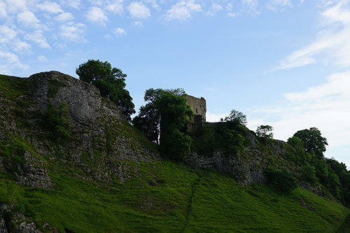
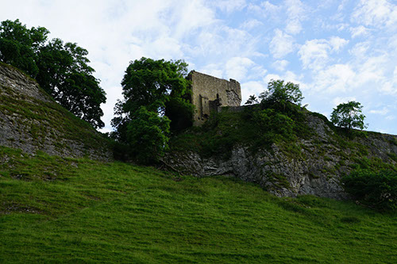
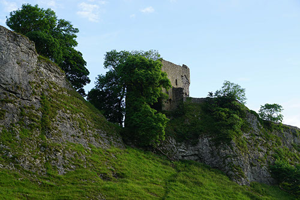
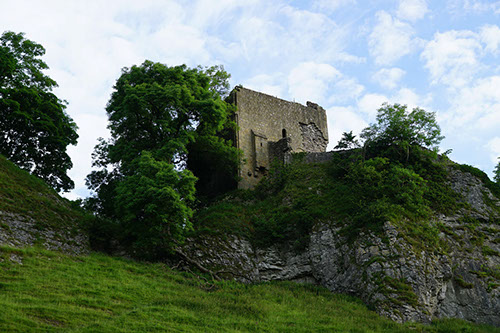
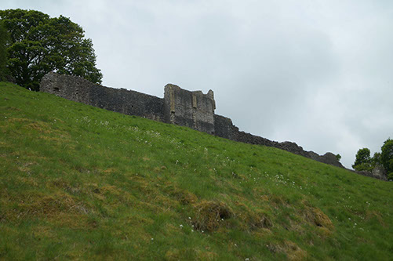
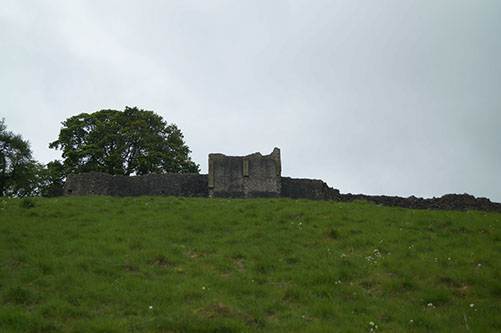
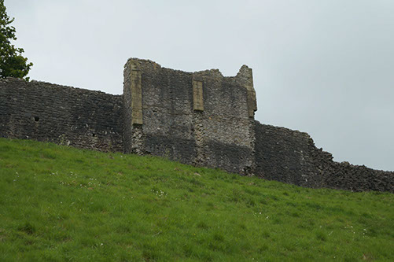
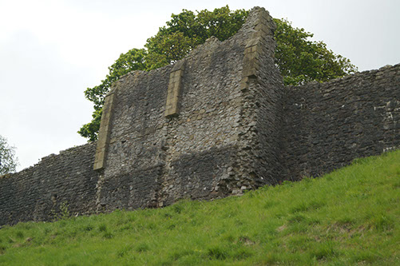
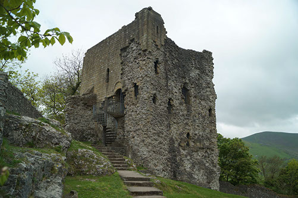
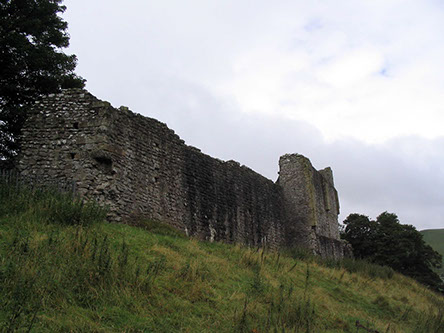
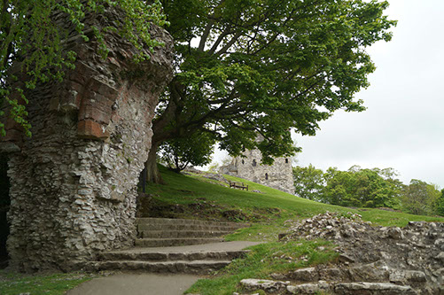
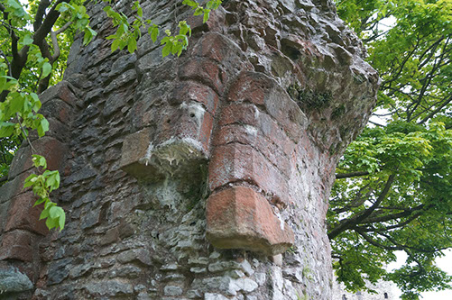
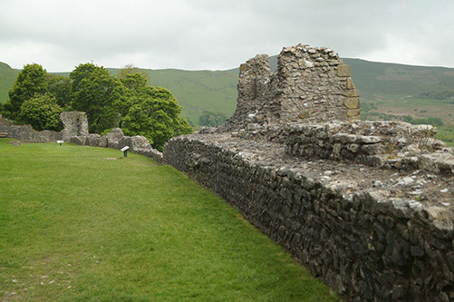
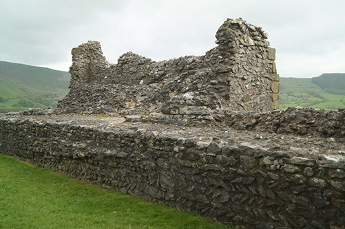
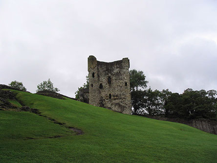
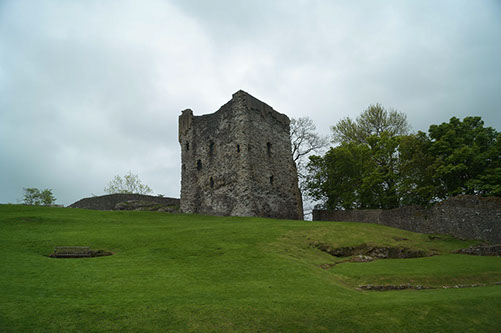